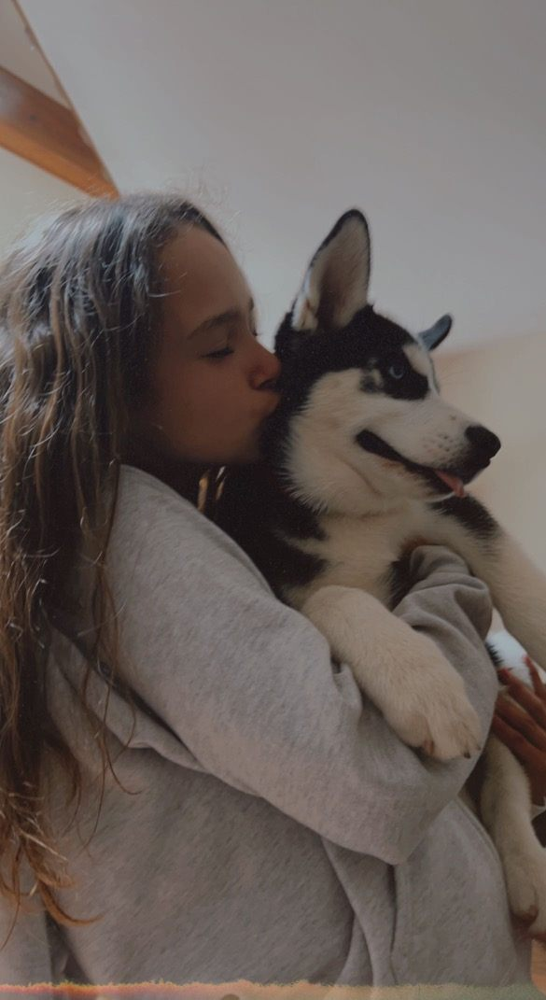

01, Story
Everyone has a different version of you in their mind, and you can't control what that is, so it's important to go about life being open-minded about everyone, and to exude optimism, respect, and love. I've created this website to share all the versions of myself that I find interesting and that spark growth.
In school, I am dedicated to learning new concepts. At home, I am a sister, daughter, and dog owner. At practice, I am a runner and teammate. For myself, I am someone who shows up for myself and loves animals.
Since before I was born, my family has been fostering dogs, no matter what part of my life I was in, I always kept responsible for my dogs. This love for animals has translated into me wanting to help outside my own house: I am working toward not only promoting health for society, but for humane farming.
Each day I try to grow in some way, shape, or form, and try to promote others to feel the same way. Of all the lessons I've learned, the one I find most important is to remember not to take anything for granted, we're only in this world once, so take the risks, believe in yourself, and care for others. How could you not, when you only have one shot?
I am applying to college for nutrition, health, and business, with the intent of having scientific knowledge to apply to my health-oriented lifestyle and long-term goals. I am aspiring to start my own health food and fitness business.
The only true failure is leaving your dreams on the table because you were too afraid to try.
